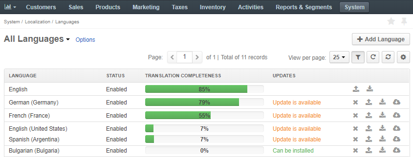
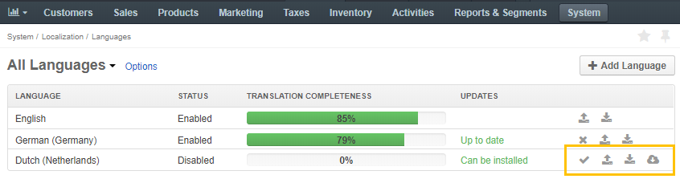
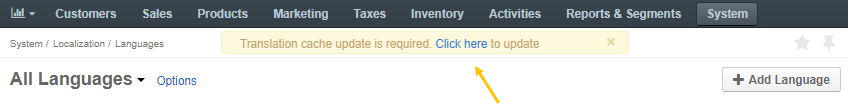

In the Oro applications, language is a core component of system localization and content translation. It performs the following functions:
To view and update the existing languages, or add new ones, navigate to System > Localization > Languages in the main menu.
The following information about the languages is available in the All Languages list:
| Name | Description |
|---|---|
| LANGUAGE | The language of the text system elements available to the user. |
| STATUS | The status of the target language that identifies whether the translation is enabled or disabled for the Oro application. |
| TRANSLATION COMPLETENESS | The translation completion progress measured in percentages. |
| UPDATES | The status that defines whether the corresponding language translation can be installed and updated via the Crowdin service. |
Every language covers the OroCommerce elements translation for a specific localization. For example, French (Canada) or English (Canada) localization may be linked to a respective language with translations that apply to Canada only.
To add a new translation and start using it for localization:
Now, once the language has appeared in the list, you can perform the following actions:
Import the file with the system elements translation from the Crowdin service into the Oro application by clicking the icon at the end of the row and then Install in the popup form. The import is available if the status in the Updates column is set to Can be installed signifying that the corresponding translation has been provided on the Crowdin website. More information on how to contribute to OroCommerce translation is described in the Contribute to Translations section.
If there is no translation available on the Crowdin website, or it is not enough to cover all the text system elements in the application, provide your own translation:
Once the translation is completed, you can upload the file into the application:
Click to trigger a popup import dialog.
Click Choose File and select the .csv file you have prepared.
Select the strategy for uploading the file.
Click Submit to start the file import.
Click Cancel to decline the import.
Important
Interactive status messages inform about the import progress. Additionally, an email message with the import status is delivered to your mailbox. Once the import is complete, check out the changes in the Translations section.
Click to enable the language for the application.
Now, you need to update the translation cache so that all the changes could enter into force. Click the reference link at the top and follow the steps described in the Translations section.
